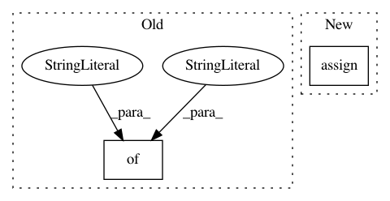

c6fa54229d33c6b2a26d4ccdee551d9e42b8b086,src/pudl/transform/ferc714.py,,electricity_planning_areas,#Any#,586
Before Change
NAICS_CODE=lambda x: pd.to_numeric(x.NAICS_CODE),
YEAR=lambda x: pd.to_numeric(x.YEAR),
)
.astype({
"OBJECTID": pd.Int64Dtype(),
"ID": pd.Int64Dtype(),
"NAME": pd.StringDtype(),
"COUNTRY": pd.StringDtype(),
"NAICS_CODE": pd.Int64Dtype(),
"NAICS_DESC": pd.StringDtype(),
"SOURCE": pd.StringDtype(),
"VAL_METHOD": pd.StringDtype(),
"WEBSITE": pd.StringDtype(),
"ABBRV": pd.StringDtype(),
"YEAR": pd.Int64Dtype(),
"PEAK_LOAD": float,
"PEAK_RANGE": float,
"SHAPE__Are": float,
"SHAPE__Len": float,
})
.set_index("OBJECTID")
)
return gdf
After Change
"local/hifld/electric_planning_areas.gdb"
)
gdf = (
geopandas.read_file(gdb_path)
.assign(
SOURCEDATE=lambda x: pd.to_datetime(x.SOURCEDATE),
VAL_DATE=lambda x: pd.to_datetime(x.VAL_DATE),
ID=lambda x: pd.to_numeric(x.ID),
NAICS_CODE=lambda x: pd.to_numeric(x.NAICS_CODE),
YEAR=lambda x: pd.to_numeric(x.YEAR),
)
// Hack to work around geopanda issue fixed as of v0.8.0
// https://github.com/geopandas/geopandas/issues/1366
.assign(
ID=lambda x: x.ID.astype(pd.Int64Dtype()),
NAME=lambda x: x.NAME.astype(pd.StringDtype()),
COUNTRY=lambda x: x.COUNTRY.astype(pd.StringDtype()),
NAICS_CODE=lambda x: x.NAICS_CODE.astype(pd.Int64Dtype()),
NAICS_DESC=lambda x: x.NAICS_DESC.astype(pd.StringDtype()),
SOURCE=lambda x: x.SOURCE.astype(pd.StringDtype()),
VAL_METHOD=lambda x: x.VAL_METHOD.astype(pd.StringDtype()),
WEBSITE=lambda x: x.WEBSITE.astype(pd.StringDtype()),
ABBRV=lambda x: x.ABBRV.astype(pd.StringDtype()),
YEAR=lambda x: x.YEAR.astype(pd.Int64Dtype()),
PEAK_LOAD=lambda x: x.PEAK_LOAD.astype(float),
PEAK_RANGE=lambda x: x.PEAK_RANGE.astype(float),
SHAPE_Length=lambda x: x.SHAPE_Length.astype(float),
SHAPE_Area=lambda x: x.SHAPE_Area.astype(float),
)
)
// Need to set these IDs b/c HIFLD geometry uses EIA Balancing Authority IDs
// (maybe?) FERC 714 is using EIA Utility IDs. This isn"t totally resolved
// and we need to figure out which set of IDs is getting used where.
gdf.loc[gdf.ID == 2775, "ID"] = 229 // CAISO
In pattern: SUPERPATTERN
Frequency: 3
Non-data size: 2
Instances
Project Name: catalyst-cooperative/pudl
Commit Name: c6fa54229d33c6b2a26d4ccdee551d9e42b8b086
Time: 2020-05-13
Author: zane.selvans@catalyst.coop
File Name: src/pudl/transform/ferc714.py
Class Name:
Method Name: electricity_planning_areas
Project Name: NervanaSystems/coach
Commit Name: 1aa2ab0590edb3e6e876d44ea0aeffc1c8f6d838
Time: 2018-08-27
Author: gal.leibovich@intel.com
File Name: rl_coach/base_parameters.py
Class Name: InputEmbedderParameters
Method Name: __init__
Project Name: catalyst-cooperative/pudl
Commit Name: bf7f740f3d6e2d419567109e2fdb0e264e3ad913
Time: 2019-11-16
Author: zane.selvans@catalyst.coop
File Name: src/pudl/transform/ferc1.py
Class Name:
Method Name: _plants_steam_clean